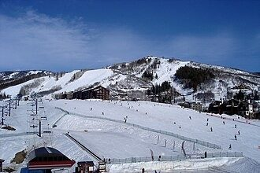

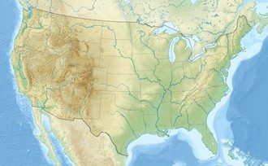

.jpg){kind=link}
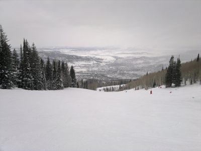
.jpg){kind=link}
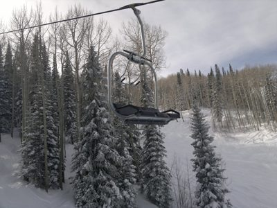
.jpg){kind=link}
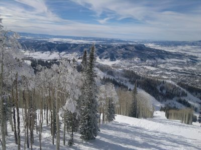

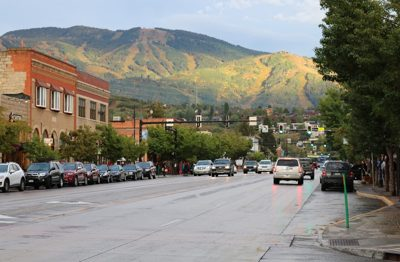
.jpg){kind=link}
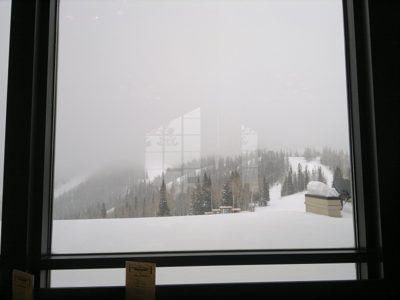
.jpg){kind=link}
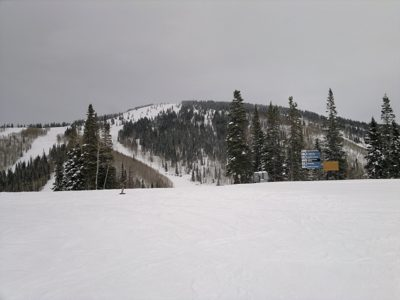

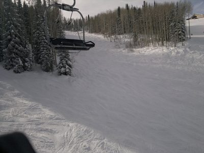
.jpg){kind=link}
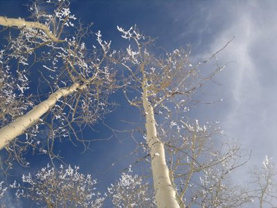
.jpg){kind=link}
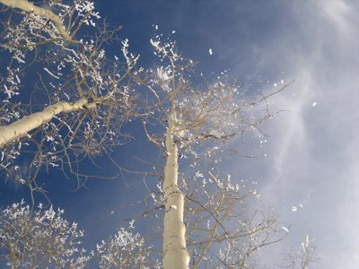
.jpg){kind=link}
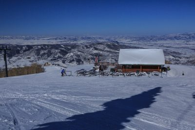
.jpg){kind=link}
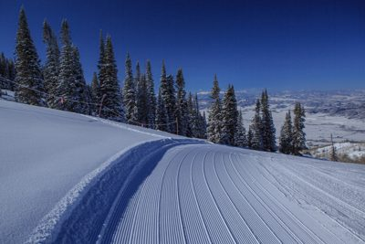
.jpg){kind=link}
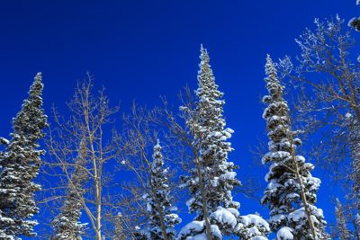
.jpg){kind=link}
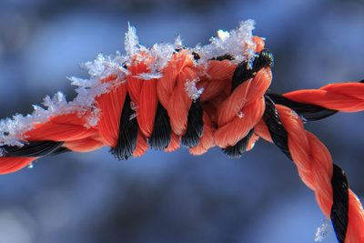
.jpg){kind=link}
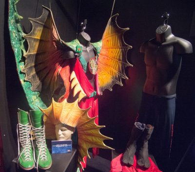

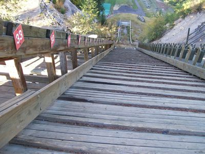

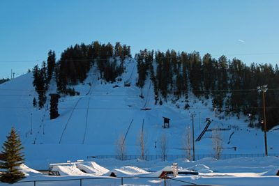
.jpg){kind=link}
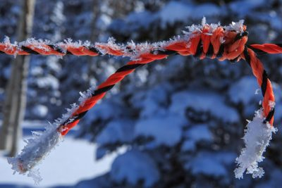
.jpg){kind=link}
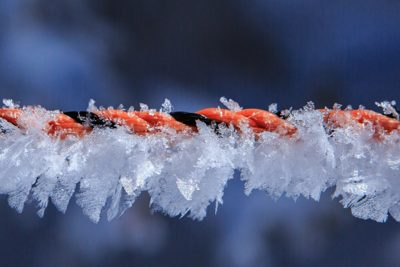
.jpg){kind=link}
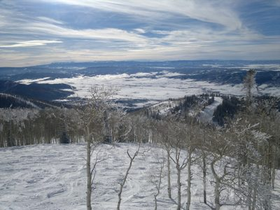
.jpg){kind=link}
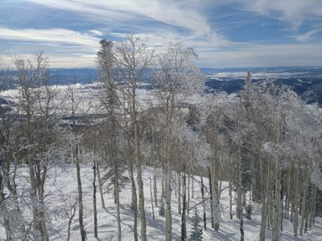

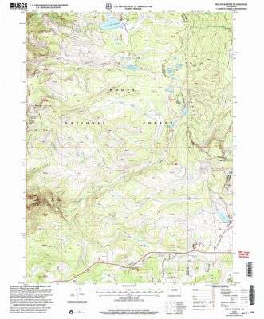
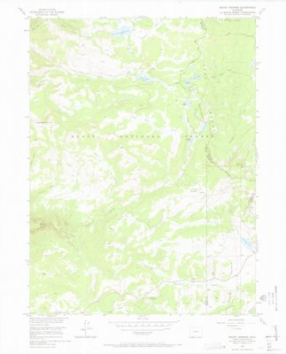
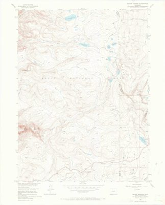


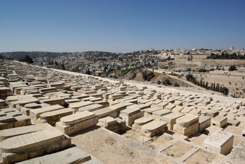

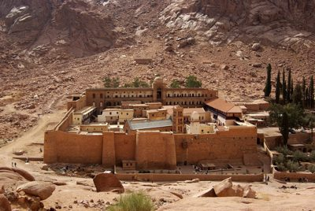

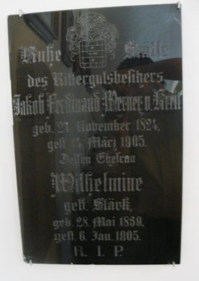

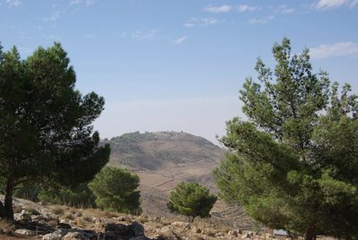

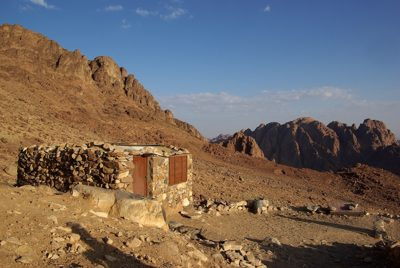

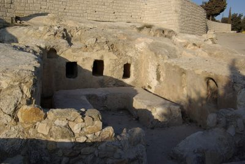

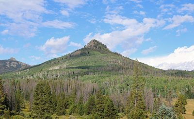

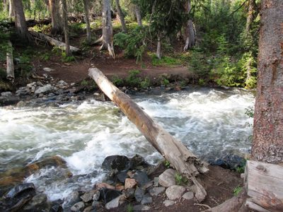

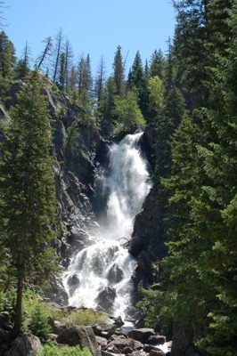

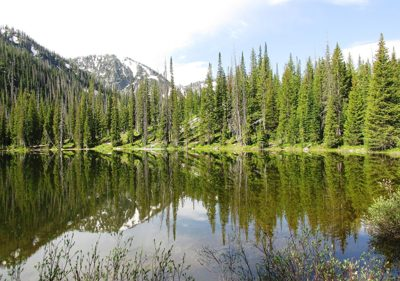

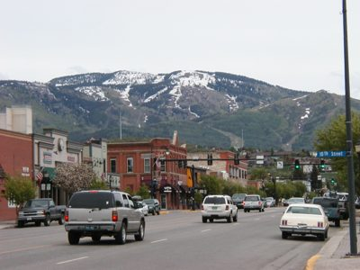

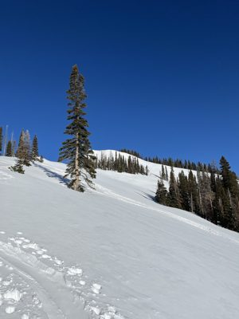
.jpg){kind=link}
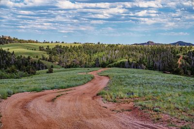

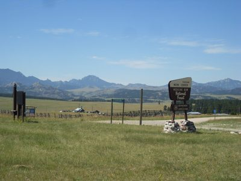

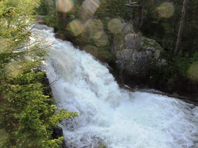
.png){kind=link}
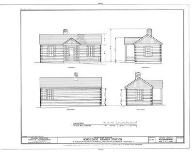
_(19758148394).jpg){kind=link}
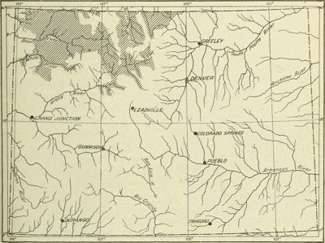

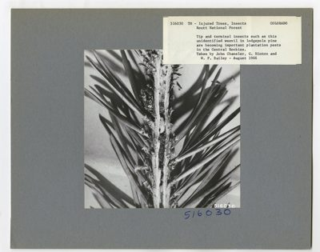

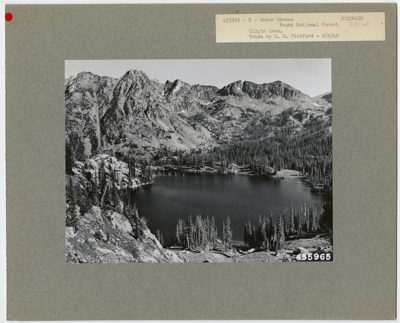
ski-steamboat — research
source: https://www.steamboat.com/ + https://en.wikipedia.org/wiki/Steamboat_Ski_Resort
title: Steamboat Ski Resort - Wikipedia

fonts: n/a
css hexes: #fdfdfd(3), #1f1f23(2), #f8f9fa(2), #bf3c2c(2), #18911f(2), #333399(1), #ffffff(1), #a2a9b1(1), #e6e6ff(1), #f7f7f7(1)
headings
- Contents
- Steamboat Ski Resort
- Ownership
- Mountain statistics
- NCAA Championships
- Full Steam Ahead
- References
- External links
copy
Steamboat Ski Resort - Wikipedia Jump to content Main menu Main menu move to sidebar hide Navigation Main page Contents Current events Random article About Wikipedia Contact us Contribute Help Learn to edit Community portal Recent changes Upload file Special pages Search Search Appearance Donate Create account Log in Personal tools Donate Create account Log in Contents move to sidebar hide (Top) 1 Ownership 2 Mountain statistics Toggle Mountain statistics subsection 2.1 Elevation 2.2 Trails 2.3 Slope Aspects 2.4 Lifts 3 NCAA Championships 4 Full Steam Ahead Toggle Full Steam Ahead subsection 4.1 Phase I 4.2 Phase II 4.3 Phase III 5 References 6 External links Toggle the table of contents Steamboat Ski Resort 1 language مصرى Edit links Article Talk English Read Edit View history Tools Tools move to sidebar hide Actions Read Edit View history General What links here Related changes Upload file Permanent link Page information Cite this page Get shortened URL Switch to legacy parser Print/export Download as PDF Printable version In other projects Wikimedia Commons Wikidata item Appearance move to sidebar hide Coordinates : 40°27′32″N 106°48′11″W / 40.459°N 106.803°W / 40.459; -106.803 From Wikipedia, the free encyclopedia Ski area in Colorado, United States Base of the mountain in 2008"},"location":{"wt":"[[Routt County, Colorado|Routt County]], Colorado,&nbsp;United States."},"nearest_city":{"wt":"[[Steamboat Springs, Colorado|Steamboat Springs]]"},"pushpin_map":{"wt":"USA#Colorado"},"pushpin_relief":{"wt":"1"},"coordinates":{"wt":"{{coord|40.459<!--|27|10-->|N|106.803<!--|46|23-->|W|type:landmark_scale:50000|display=inline,title}}"},"pushpin_label_position":{"wt":""},"pushpin_caption":{"wt":"Location in the United States##Location in Colorado"},"status":{"wt":"Operating"},"owner":{"wt":"[[Alterra Mountain Company]]"},"top_elevation":{"wt":"{{convert|10568|ft}}"},"base_elevation":{"wt":"{{spaces|2}}{{convert|6900|ft|0}}"},"vertical":{"wt":"{{spaces|2}}{{convert|3668|ft}}"},"skiable_area":{"wt":"{{convert|3741|acre|km2|1}}"},"number_trails":{"wt":"170 total <br>[[Image:Ski trail rating symbol-green circle.svg|13px]] - 14% beginner<br>[[Image:Ski trail rating symbol-blue square.svg|13px]] - 42% intermediate<br>[[Image:Ski trail rating symbol-black diamond.svg|13px]] - 44% advanced"},"longest_run":{"wt":"\"Why Not\" ~ {{convert|3|mi|0}}"},"lift_system":{"wt":"24 total: 3 [[gondola lift|gondola]]s,<br>1 high-speed six-pack<!-- passenger-->,<br>8 high-speed quad chairs,<br>4 triple chairs,<br>2 double chairs,<br>6 surface lifts"},"terrain_parks":{"wt":"Yes, 6"},"night_skiing":{"wt":"Yes"},"snowfall":{"wt":"{{convert|400|in|ft m|1}}"},"website":{"wt":"{{URL|https://www.steamboat.com|steamboat.com}}"}},"i":0}}]}'> Steamboat Resort Base of the mountain in 2008 Steamboat Resort Location in the United States Show map of the United States Steamboat Resort Location in Colorado Show map of Colorado Location Routt County , Colorado, United States. Nearest city Steamboat Springs Coordinates 40°27′32″N 106°48′11″W / 40.459°N 106.803°W / 40.459; -106.803 [[Geographic coordinate system|Coordinates]]: {{#parsoid\u0000fragment:7}}<span class=\"plainlinks nourlexpansion\">[https://geohack.toolforge.org/geohack.php?pagename=Steamboat_Ski_Resort&params=40.459_N_106.803_W_type:landmark_scale:50000 <span class=\"geo-nondefault\"><span class=\"geo-dms\" title=\"Maps, aerial photos, and other data for th
refs kept (people-screened)
- 00.jpg: This is the logo for Steamboat, a well-known ski resort in Colorado. | logo=True | palette ['#000000', '#3f2559', '#000005', '#16163a', '#000100']
- 06.jpg: A wide-angle view of a snowy ski resort with slopes, chairlifts, and buildings under a clear blue sky. | logo=False | palette ['#263a61', '#556e96', '#8696b4', '#a9b3c7', '#c2c9da']
- 07.jpg: This is a topographic map of the United States showing geographical features like mountains and rivers. | logo=False | palette ['#b5c5a2', '#ddd9ae', '#8aafbf', '#e3e9cd', '#c2d9c9']
- 08.jpg: This is a topographic map showing terrain features and waterways in a region with grid lines for geographic reference. | logo=False | palette ['#af9a69', '#8e784e', '#c2b587', '#cfc69c', '#dbd5ad']
- commons01.jpg: A wide-angle view of a snowy mountain landscape with ski slopes, trees, and distant hills under an overcast sky. | logo=False | palette ['#bebcc0', '#cac8cb', '#676665', '#d1cfd2', '#d9d6d8'] | SOURCE commons: Cloudy.... (5259326434).jpg — William J Sisti from Morristown, NJ, USA · Wikimedia Commons · CC-BY-SA https://commons.wikimedia.org/wiki/File:Cloudy...._(5259326434).jpg
- commons02.jpg: A ski lift chair ascends through a snowy forest with snow-covered trees under an overcast sky. | logo=False | palette ['#c9c8cc', '#919196', '#383a3c', '#696766', '#545455'] | SOURCE commons: Lonely Chair (5258741369).jpg — William J Sisti from Morristown, NJ, USA · Wikimedia Commons · CC-BY-SA https://commons.wikimedia.org/wiki/File:Lonely_Chair_(5258741369).jpg
- commons04.jpg: A breathtaking aerial view of a snow-covered mountain landscape with dense forests and distant valleys under a partly cloudy sky. | logo=False | palette ['#6b7078', '#474d55', '#8490a3', '#9da9bb', '#bac0ca'] | SOURCE commons: More of the Vallye (5259348590).jpg — William J Sisti from Morristown, NJ, USA · Wikimedia Commons · CC-BY-SA https://commons.wikimedia.org/wiki/File:More_of_the_Vallye_(5259348590).jpg
- commons05.jpg: A street view of a town with mountains in the background, featuring parked cars and traffic lights. | logo=False | palette ['#746d5e', '#32311f', '#b8b6b1', '#a39e95', '#c6d3e1'] | SOURCE commons: Mount Werner.JPG — Jeffrey Beall · Wikimedia Commons · CC-BY https://commons.wikimedia.org/wiki/File:Mount_Werner.JPG
- commons10.jpg: A snowy mountain landscape viewed through a window during heavy fog or snowfall. | logo=False | palette ['#0a0c09', '#c7c6c7', '#d5d3d5', '#dbd9db', '#747471'] | SOURCE commons: Steamboat Mountain starts to disappear (5259327890).jpg — William J Sisti from Morristown, NJ, USA · Wikimedia Commons · CC-BY-SA https://commons.wikimedia.org/wiki/File:Steamboat_Mountain_starts_to_disappear_(5259327890).jpg
- commons11.jpg: A snowy mountain landscape with trees and ski slopes under an overcast sky. | logo=False | palette ['#a6a5aa', '#bfbfc2', '#504f4b', '#d1d0d2', '#d9d7d9'] | SOURCE commons: Steamboat Peaks (5258720825).jpg — William J Sisti from Morristown, NJ, USA · Wikimedia Commons · CC-BY-SA https://commons.wikimedia.org/wiki/File:Steamboat_Peaks_(5258720825).jpg
- commons12.jpg: A ski lift chair sits idle against a backdrop of snow-covered trees and slopes on a winter day. | logo=False | palette ['#838287', '#323331', '#8b898d', '#6f6e70', '#a5a1a0'] | SOURCE commons: Steamboat Ski Resort ski lift 2010.jpg — William J Sisti from Morristown, NJ, USA · Wikimedia Commons · CC-BY-SA https://commons.wikimedia.org/wiki/File:Steamboat_Ski_Resort_ski_lift_2010.jpg
- commons13.jpg: Snow-covered tree branches reach upward against a clear blue sky with scattered clouds. | logo=False | palette ['#656d80', '#3d5070', '#8a8b94', '#b6b8c0', '#a5a7ae'] | SOURCE commons: Steamboat Skies (5258743709).jpg — William J Sisti from Morristown, NJ, USA · Wikimedia Commons · CC-BY-SA https://commons.wikimedia.org/wiki/File:Steamboat_Skies_(5258743709).jpg
- commons14.jpg: A low-angle shot of snow-covered tree branches against a blue sky with scattered clouds. | logo=False | palette ['#b8b9c2', '#959499', '#42526e', '#5f6a81', '#76767d'] | SOURCE commons: Steamboat Skies (5258743895).jpg — William J Sisti from Morristown, NJ, USA · Wikimedia Commons · CC-BY-SA https://commons.wikimedia.org/wiki/File:Steamboat_Skies_(5258743895).jpg
- commons17.jpg: A snowy mountain landscape with ski lifts and a lodge, featuring no visible people or logos. | logo=False | palette ['#7b869f', '#5e6e90', '#1f3058', '#2f5596', '#4f5a76'] | SOURCE commons: Steamboat Springs Ski Resort (8644072971).jpg — Murray Foubister · Wikimedia Commons · CC-BY-SA https://commons.wikimedia.org/wiki/File:Steamboat_Springs_Ski_Resort_(8644072971).jpg
- commons19.jpg: A groomed ski slope with fresh snow and tracks winds through a forest of snow-covered evergreen trees under a clear blue sky. | logo=False | palette ['#2d4275', '#1a2850', '#7f8da9', '#64759a', '#909bb4'] | SOURCE commons: Steamboat Springs Ski Resort (8645169336).jpg — Murray Foubister · Wikimedia Commons · CC-BY-SA https://commons.wikimedia.org/wiki/File:Steamboat_Springs_Ski_Resort_(8645169336).jpg
- commons20.jpg: Snow-covered trees stand tall against a vivid blue sky. | logo=False | palette ['#0d359a', '#485c86', '#022488', '#284994', '#7889a3'] | SOURCE commons: Steamboat Springs Ski Resort (8645169990).jpg — Murray Foubister · Wikimedia Commons · CC-BY-SA https://commons.wikimedia.org/wiki/File:Steamboat_Springs_Ski_Resort_(8645169990).jpg
- commons21.jpg: A close-up of a red and black rope covered in frost against a blurred blue background. | logo=False | palette ['#5a5f84', '#2b3347', '#833a42', '#6c77a0', '#8f9cc2'] | SOURCE commons: Steamboat Springs Ski Resort…frost on the rope, at -25 C. (8644073575).jpg — Murray Foubister · Wikimedia Commons · CC-BY-SA https://commons.wikimedia.org/wiki/File:Steamboat_Springs_Ski_Resort%E2%80%A6frost_on_the_rope,_at_-25_C._(8644073575).jpg
- commons25.jpg: This image displays a collection of elaborate costume pieces, including dragon wings and boots, displayed on mannequins in what appears to be a museum or exhibition setting. | logo=False | palette ['#100d1e', '#4e3236', '#2e1324', '#856450', '#b2a878'] | SOURCE commons: Flickr - simononly - WWE Fan Axxess - Classic Memorabilia-Ring Gear (53).jpg — Simon Q from United Kingdom · Wikimedia Commons · CC-BY https://commons.wikimedia.org/wiki/File:Flickr_-_simononly_-_WWE_Fan_Axxess_-_Classic_Memorabilia-Ring_Gear_(53).jpg
- commons27.jpg: A wooden staircase with numbered signs leads up a steep hill surrounded by trees and rocky terrain. | logo=False | palette ['#797678', '#585b60', '#8f959d', '#a3adbc', '#cbcbc6'] | SOURCE commons: Howelsen Hill SD090925 012.jpg — Greg Hamilton from Steamboat Springs, CO, USA · Wikimedia Commons · CC-BY https://commons.wikimedia.org/wiki/File:Howelsen_Hill_SD090925_012.jpg
- commons28.jpg: A snowy ski resort with multiple slopes and jumps surrounded by dense forests under a clear blue sky. | logo=False | palette ['#396c96', '#1d272d', '#69aed4', '#4b84af', '#8fc0d9'] | SOURCE commons: Howelsen Hill Ski Area.JPG — Jeffrey Beall · Wikimedia Commons · CC-BY-SA https://commons.wikimedia.org/wiki/File:Howelsen_Hill_Ski_Area.JPG
- commons33.jpg: A close-up of an orange and black rope covered in frost against a snowy background. | logo=False | palette ['#4a5982', '#202739', '#4b3b4e', '#66769e', '#a7b3cd'] | SOURCE commons: Steamboat Springs Ski Resort…frost on the rope, at -25 C. (8645170474).jpg — Murray Foubister · Wikimedia Commons · CC-BY-SA https://commons.wikimedia.org/wiki/File:Steamboat_Springs_Ski_Resort%E2%80%A6frost_on_the_rope,_at_-25_C._(8645170474).jpg
- commons34.jpg: A close-up of ice crystals forming on an orange and black rope against a blurred blue background. | logo=False | palette ['#a1a8c3', '#1f2840', '#626588', '#283455', '#3d3f5e'] | SOURCE commons: Steamboat Springs Ski Resort…frost on the rope, at -25 C. (8645170752).jpg — Murray Foubister · Wikimedia Commons · CC-BY-SA https://commons.wikimedia.org/wiki/File:Steamboat_Springs_Ski_Resort%E2%80%A6frost_on_the_rope,_at_-25_C._(8645170752).jpg
- commons37.jpg: A breathtaking winter landscape featuring snow-covered mountains and valleys under a partly cloudy sky. | logo=False | palette ['#474d51', '#99a3b0', '#6f7a88', '#adb5be', '#c7ccd1'] | SOURCE commons: Yampa Valley (5258742571).jpg — William J Sisti from Morristown, NJ, USA · Wikimedia Commons · CC-BY-SA https://commons.wikimedia.org/wiki/File:Yampa_Valley_(5258742571).jpg
- commons38.jpg: A snowy landscape with bare trees covered in frost and distant mountains under a partly cloudy sky. | logo=False | palette ['#71767c', '#585b5c', '#8893a0', '#a1acb9', '#c1c8cf'] | SOURCE commons: Yampa Valley and the Birches (5258742297).jpg — William J Sisti from Morristown, NJ, USA · Wikimedia Commons · CC-BY-SA https://commons.wikimedia.org/wiki/File:Yampa_Valley_and_the_Birches_(5258742297).jpg
- commons39.jpg: This is a vintage poster for Walt Disney's Mickey Mouse in Steamboat Willie. | logo=False | palette ['#82141e', '#f2d9bc', '#96735e', '#e8cfb2', '#f4ddc0'] | SOURCE commons: Classic Steamboat Willie.jpg — Unknown authorUnknown author · Wikimedia Commons · PUBLIC-DOMAIN https://commons.wikimedia.org/wiki/File:Classic_Steamboat_Willie.jpg
- ski01.jpg: This is a topographic map produced by the USGS and USDA Forest Service showing Mount Werner in Colorado. | logo=True | palette ['#fcfcfc', '#e0e9c3', '#eaebda', '#edf3db', '#d7d6be'] | SOURCE ski: CO Mount Werner 233900 2000 24000 geo (TIF).tif — USGS · ski · public-domain https://commons.wikimedia.org/wiki/File:CO_Mount_Werner_233900_2000_24000_geo_(TIF).tif
- ski02.jpg: This is a topographic map of the Mount Werner quadrangle in Colorado, produced by the U.S. Geological Survey. | logo=False | palette ['#e7f1d0', '#fcfcfc', '#fbfafa', '#eef9db', '#eaf6d3'] | SOURCE ski: CO Mount Werner 401602 1956 24000 geo (TIF).tif — USGS · ski · public-domain https://commons.wikimedia.org/wiki/File:CO_Mount_Werner_401602_1956_24000_geo_(TIF).tif
- ski03.jpg: This is a topographic map of the Mount Werner quadrangle in Colorado, produced by the United States Geological Survey. | logo=False | palette ['#fcfdf5', '#f9f9f2', '#f4f3ec', '#f7f5ee', '#efece3'] | SOURCE ski: CO Mount Werner 401603 1956 24000 geo (TIF).tif — USGS · ski · public-domain https://commons.wikimedia.org/wiki/File:CO_Mount_Werner_401603_1956_24000_geo_(TIF).tif
- ski05.jpg: A view of Jerusalem's skyline, including the Dome of the Rock, seen through an ornate stained glass window with religious symbols. | logo=False | palette ['#000000', '#657ba2', '#2b3546', '#080a0c', '#010000'] | SOURCE ski: Jerusalem Dominus flevit BW 1.JPG — Berthold Werner · ski · public-domain https://commons.wikimedia.org/wiki/File:Jerusalem_Dominus_flevit_BW_1.JPG
- ski06.jpg: This image shows the Mount of Olives cemetery in Jerusalem, with numerous tombstones and a view of the city skyline under a clear blue sky. | logo=False | palette ['#6e7d8f', '#504b45', '#969c9f', '#beb19f', '#d6c7b3'] | SOURCE ski: Jerusalem Mount of Olives BW 2010-09-20 07-57-31.JPG — Berthold Werner · ski · cc-by-sa https://commons.wikimedia.org/wiki/File:Jerusalem_Mount_of_Olives_BW_2010-09-20_07-57-31.JPG
- ski07.jpg: This image shows the Monastery of Saint Anthony in Egypt, an ancient religious site built into a rocky desert landscape. | logo=False | palette ['#8a6752', '#bc997c', '#4c2e20', '#5f453c', '#794b33'] | SOURCE ski: Katharinenkloster Sinai BW 2.jpg — Berthold Werner · ski · cc-by-sa https://commons.wikimedia.org/wiki/File:Katharinenkloster_Sinai_BW_2.jpg
- ski12.jpg: This is a historical German-language gravestone with inscriptions detailing the names and dates of death for two individuals. | logo=False | palette ['#dbdcdb', '#505350', '#2c2b26', '#1c1d18', '#393934'] | SOURCE ski: Mosisgreut Kapelle Epitaph Werner Ferdinand und Wilhelmine Werner von Kreit.jpg — Photo: Andreas Praefcke · ski · public-domain https://commons.wikimedia.org/wiki/File:Mosisgreut_Kapelle_Epitaph_Werner_Ferdinand_und_Wilhelmine_Werner_von_Kreit.jpg
- ski14.jpg: The image shows a natural landscape with trees and hills under a clear blue sky. | logo=False | palette ['#222318', '#9fb9da', '#5a5943', '#bbcadf', '#8e9aaa'] | SOURCE ski: Mount Nebo BW 6.JPG — Berthold Werner · ski · cc-by https://commons.wikimedia.org/wiki/File:Mount_Nebo_BW_6.JPG
- ski16.jpg: A stone building sits alone in a barren, rocky desert landscape under a clear blue sky. | logo=False | palette ['#786357', '#483326', '#787778', '#878a8a', '#9d9d9a'] | SOURCE ski: Mount Sinai BW 4.jpg — Berthold Werner · ski · cc-by-sa https://commons.wikimedia.org/wiki/File:Mount_Sinai_BW_4.jpg
- ski17.jpg: The image shows ancient stone ruins with carved openings and walls, likely an archaeological site or historical structure. | logo=False | palette ['#252426', '#9f8d70', '#b39f7f', '#504a42', '#c7b28f'] | SOURCE ski: Mount Skopus BW 3.jpg — Berthold Werner · ski · public-domain https://commons.wikimedia.org/wiki/File:Mount_Skopus_BW_3.jpg
- ski25.jpg: A mountain covered in forests under a blue sky with scattered clouds. | logo=False | palette ['#84b5ed', '#bad0ee', '#5b5a3a', '#737a59', '#888463'] | SOURCE ski: City Mountain.JPG — Jeffrey Beall · ski · cc-by https://commons.wikimedia.org/wiki/File:City_Mountain.JPG
- ski26.jpg: A fast-flowing river with whitewater rushes past rocks and trees in a forested area. | logo=False | palette ['#817a70', '#c2c4c1', '#2f2d26', '#464b3b', '#61564e'] | SOURCE ski: First Gold Creek crossing - Flickr - brewbooks.jpg — brewbooks from near Seattle, USA · ski · cc-by-sa https://commons.wikimedia.org/wiki/File:First_Gold_Creek_crossing_-_Flickr_-_brewbooks.jpg
- ski27.jpg: A powerful waterfall cascades down a rocky cliff surrounded by dense evergreen forests under a clear blue sky. | logo=False | palette ['#565e4e', '#a3c0d4', '#1c221c', '#363d30', '#273125'] | SOURCE ski: Fish Creek Falls, Colorado.jpg — pdsphil · ski · cc-by https://commons.wikimedia.org/wiki/File:Fish_Creek_Falls,_Colorado.jpg
- ski28.jpg: A serene mountain lake reflects the surrounding forest and snow-capped peaks under a partly cloudy sky. | logo=False | palette ['#e3ebf1', '#93976f', '#454923', '#727346', '#606639'] | SOURCE ski: Gold Creek Lake - Flickr - brewbooks.jpg — brewbooks from near Seattle, USA · ski · cc-by-sa https://commons.wikimedia.org/wiki/File:Gold_Creek_Lake_-_Flickr_-_brewbooks.jpg
- ski42.jpg: A street view of a town with mountains in the background, featuring cars on the road and buildings along the sides. | logo=False | palette ['#686d70', '#48413a', '#a29f9f', '#edf0f2', '#e9ecf0'] | SOURCE ski: Steamboat Springs downtown.jpg — katkimchee · ski · cc-by https://commons.wikimedia.org/wiki/File:Steamboat_Springs_downtown.jpg
- ski44.jpg: A snow-covered mountain slope with trees under a clear blue sky. | logo=False | palette ['#b9c0c6', '#264d89', '#11305d', '#c6ccd1', '#91a0b5'] | SOURCE ski: Baker Mountain Medicine Bow-Routt National Forest.jpg — Squaliver · ski · cc0 https://commons.wikimedia.org/wiki/File:Baker_Mountain_Medicine_Bow-Routt_National_Forest.jpg
- ski46.jpg: A winding dirt road cuts through a vibrant landscape of green hills and forests under a dramatic sky filled with clouds. | logo=False | palette ['#7b6850', '#99b6d1', '#4c4132', '#858880', '#b9c8da'] | SOURCE ski: Eagle Rock Road - Dirt Road in the Medicine Bow-Routt National Forest - Wyoming (53077875065).jpg — Tony Webster · ski · cc-by https://commons.wikimedia.org/wiki/File:Eagle_Rock_Road_-_Dirt_Road_in_the_Medicine_Bow-Routt_National_Forest_-_Wyoming_(53077875065).jpg
- ski47.jpg: A sign for the Medicine Bow National Forest and US Department of Agriculture stands in a grassy field with mountains in the background. | logo=True | palette ['#9abedb', '#7f7d53', '#789fc6', '#5a5e46', '#6f775d'] | SOURCE ski: Esterbrook Medicine Bow NF.jpg — Wusel007 · ski · cc-by-sa https://commons.wikimedia.org/wiki/File:Esterbrook_Medicine_Bow_NF.jpg
- ski49.jpg: A powerful waterfall cascades through a dense forest, surrounded by lush green trees and rocky terrain. | logo=False | palette ['#494b33', '#22221a', '#b0bfcd', '#888b75', '#c5d8e4'] | SOURCE ski: Gold Creek was flowing - Flickr - brewbooks.jpg — brewbooks from near Seattle, USA · ski · cc-by-sa https://commons.wikimedia.org/wiki/File:Gold_Creek_was_flowing_-_Flickr_-_brewbooks.jpg
- ski51.jpg: This is an architectural drawing of the Horseshoe Ranger Station, showing its elevations from different angles. | logo=False | palette ['#ffffff', '#d9d9d9', '#e6e6e6', '#c1c1c1', '#f7f7f7'] | SOURCE ski: Horseshoe Ranger Station, 15 miles South of Parshall, Parshall, Grand County, CO HABS COLO,25-PARS.V,1- (sheet 3 of 4).png — Related names:
Civilian Conservation Corps
U.S. Forest Service
Athearn, Frederi · ski · public-domain https://commons.wikimedia.org/wiki/File:Horseshoe_Ranger_Station,_15_miles_South_of_Parshall,_Parshall,_Grand_County,_CO_HABS_COLO,25-PARS.V,1-_(sheet_3_of_4).png
- ski53.jpg: This is a black and white map showing rivers and cities in Colorado, including Denver, Pueblo, and Grand Junction. | logo=False | palette ['#d4cfaf', '#e1ddbb', '#b6b293', '#e9e3c2', '#ede7c5'] | SOURCE ski: Image from page 116 of "A biological survey of Colorado" (1911) (19758148394).jpg — Internet Archive Book Images · ski · cc0 https://commons.wikimedia.org/wiki/File:Image_from_page_116_of_%22A_biological_survey_of_Colorado%22_(1911)_(19758148394).jpg
- ski54.jpg: This image shows a close-up of an injured lodgepole pine tree with visible insect damage, accompanied by a label indicating it was taken in Colorado in August 1966. | logo=False | palette ['#76797a', '#d5d5d0', '#777976', '#818380', '#585955'] | SOURCE ski: Insects- Forest Insects - All States - DPLA - 88fc537104886243e8047bc8a4628aa3.jpg — Department of Agriculture. Forest Service. 7/1/1905 · ski · public-domain https://commons.wikimedia.org/wiki/File:Insects-_Forest_Insects_-_All_States_-_DPLA_-_88fc537104886243e8047bc8a4628aa3.jpg
- ski55.jpg: This is a black and white photograph of Gilpin Lake in the Routt National Forest, Colorado, taken by G. D. Pickford on August 8, 1949. | logo=False | palette ['#868578', '#424342', '#c7c4bc', '#7d7d75', '#8e8c81'] | SOURCE ski: Lake Scenes - Colorado - DPLA - 6bbedccd919d53447e9ec0462260b972.jpg — Department of Agriculture. Forest Service. 7/1/1905 · ski · public-domain https://commons.wikimedia.org/wiki/File:Lake_Scenes_-_Colorado_-_DPLA_-_6bbedccd919d53447e9ec0462260b972.jpg
- ski57.jpg: A vast mountain range stretches under a dramatic sky filled with dark, stormy clouds. | logo=False | palette ['#203a3f', '#7a898f', '#4e6164', '#9da6a5', '#bac3ca'] | SOURCE ski: Radial Mountain from Parkview Mountain 2024-06-28, Cropped.jpg — Trellbailey · ski · cc-by-sa https://commons.wikimedia.org/wiki/File:Radial_Mountain_from_Parkview_Mountain_2024-06-28,_Cropped.jpg
- ski58.jpg: A vast mountain landscape under a dramatic sky filled with dark and light clouds. | logo=False | palette ['#6d7469', '#404a4b', '#91958d', '#acb1b7', '#c7ccd4'] | SOURCE ski: Radial Mountain from Parkview Mountain 2024-06-28.jpg — Trellbailey · ski · cc-by-sa https://commons.wikimedia.org/wiki/File:Radial_Mountain_from_Parkview_Mountain_2024-06-28.jpg
- ski59.jpg: A U.S. Forest Service tool box for fire suppression is shown with its door open, revealing firefighting equipment inside. | logo=False | palette ['#2f2f2f', '#616161', '#a1a1a1', '#c2c2c2', '#e1e1e1'] | SOURCE ski: Routt National Forest, Colorado. U.S. Forest Service shed showing tools and canned food inside LCCN90715912.jpg — National Photo Company Collection · ski · public-domain https://commons.wikimedia.org/wiki/File:Routt_National_Forest,_Colorado._U.S._Forest_Service_shed_showing_tools_and_canned_food_inside_LCCN90715912.jpg


refs dropped
- 1280px-Steamboat_springs_ski_resort.jpg?utm_source=en.wikipe: non-brand person -> dropped
- enwiki-25.svg: HTTP Error 404: Not Found
- wikipedia-wordmark-en-25.svg: HTTP Error 404: Not Found
- wikipedia-tagline-en-25.svg: HTTP Error 404: Not Found
- wikimedia.svg: HTTP Error 404: Not Found
- mediawiki_compact.svg: HTTP Error 404: Not Found
- 1920px-More_of_Steamboat%27s_mountain_and_sky_%285259349232%: person in frame -> dropped
- 1920px-Not_sure..._%285259348206%29.jpg?utm_source=commons.w: person in frame -> dropped
- 1920px-Steamboat_DOWN_THE_HILL_%285259349458%29.jpg?utm_sour: person in frame -> dropped
- 1920px-Steamboat_Hot_Coco_stop_%285258743261%29.jpg?utm_sour: person in frame -> dropped
- 1920px-Steamboat_Mid_Mountain_Supplies_%285259349652%29.jpg?: person in frame -> dropped
- 1920px-Steamboat_Springs_Ski_Area-2.jpg?utm_source=commons.w: person in frame -> dropped
- 1920px-Steamboat_Springs_Ski_Resort_%288644072249%29.jpg?utm: person in frame -> dropped
- 1920px-Steamboat_Springs_Ski_Resort_%288644074507%29.jpg?utm: person in frame -> dropped
- 1920px-Steamboat_from_the_lift_%285259349988%29.jpg?utm_sour: person in frame -> dropped
- 1920px-Steamboat_springs_ski_resort.jpg?utm_source=commons.w: person in frame -> dropped
- 1920px-Howelsen_Hill_01.jpg?utm_source=commons.wikimedia.org: person in frame -> dropped
- 1920px-Jay_Youngblood_and_Rick_Steamboat.jpg?utm_source=comm: person in frame -> dropped
- 1920px-Pro_Wrestling_Illustrated_February_1989_%289%29.jpg?u: person in frame -> dropped
- 1920px-Mount_Nebo_BW_4.JPG?utm_source=commons.wikimedia.org&: person in frame -> dropped
- 1920px-Mount_Sinai_BW_3.jpg?utm_source=commons.wikimedia.org: person in frame -> dropped
- 1920px-Historical_Forest_Service_Photos_%2819650708-FS-Routt: person in frame -> dropped
notes
primary fetch failed: thin body (212 bytes) - likely bot wall
thin/blocked primary; copy from wikipedia
sources (deep, kind=ski)
| source | fetched | kept | licenses |
| site | 0 | 0 | - |
| commons | 40 | 21 | cc-by,cc-by-sa,public-domain |
| unsplash | 0 | 0 | - |
| loc | 0 | 0 | - |
| ski | 60 | 26 | cc-by,cc-by-sa,cc0,public-domain |
| nps | 0 | 0 | - |
notes: unsplash: HTTP Error 403: Forbidden; unsplash: HTTP Error 403: Forbidden; unsplash: HTTP Error 403: Forbidden; loc: HTTP Error 429: Too Many Requests; loc: HTTP Error 429: Too Many Requests; loc: HTTP Error 429: Too Many Requests; ski layers terrain:45 forest:33 ecology:29 activity:20 geo8km:50
components (deterministic, true, licensed — available as refs by filename)
Each is a real dataset drawn by our own tools, not a photo. A slot MAY take one as its structure (photo-as-structure rule) or as a charge.
| ref file | kind | what it is | source |
| c-skimap-hdn-steamboat.jpg | route-map | airport HDN → Steamboat | Route and place data © OpenStreetMap contributors (ODbL). Terrain: SRT |
| c-skiarea-steamboat.jpg | ski-area | the resort polygon | Boundary © OpenStreetMap contributors (ODbL). Terrain: SRTM via AWS Te |
| c-snow-steamboat.jpg | stripe | last season's snow at the resort | Snow depth: USDA NRCS SNOTEL (public domain). |
| c-daylight-steamboat.jpg | stripe | latitude | Computed (NOAA sunrise equation); no external data. |
| c-temp-steamboat.jpg | stripe | a year against freezing | Daily temperatures: NOAA NCEI GHCN-Daily (public domain). |